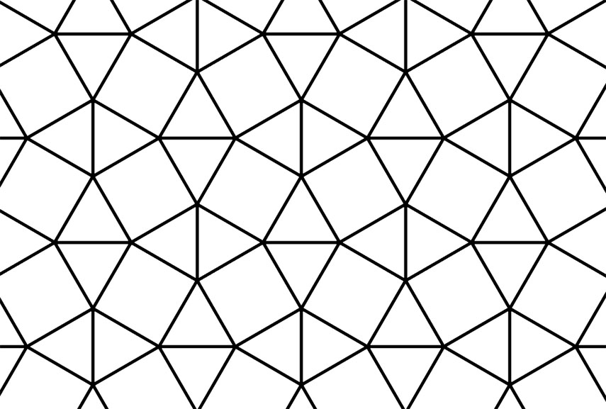

When working on code, it is highly unlikely that what you are implementing or writing is something that has not ever been done before. In fact, more often than not, your specific problem may have already been solved once before on an online forum or message board. Through digging through the internet, you could very easily find these solutions that may have taken you hours to come up with. Though there are probably answers to any question you could have in regards to coding, it is always best to have a sort of plan of action in regards to how to tackle coding problems. To this end, I will bring up the topic of design patterns, which is what can only be described as a framework for one to work off of in order to solve a general coding problem that occurs commonly. Without completely delving into an implementation of the pattern itself, design patterns are more of a checklist or formula that one can use to solve the problem being posed.
Design patterns can be useful as it could give one an idea to solving a problem by breaking it up into smaller steps that are easier to digest and to code. While not outright solving the problem, it could be the springboard towards the eventual answer. Additionally, you may already have been using Design Patterns without even knowing that they existed in the first place. I myself did not realize what they were until I had searched them up and learned that I had been using them for quite some time without realizing it. More specifically, I had been using many of the Behavioral Patterns such as the iterator, servant, state and template methods to name a few.
While I can see how design patterns at the end of the day are great for making it easier to code by solving problems before they happen or by providing tried and true methods to problems, I can also say that it may not always be apparent when they will be useful and that evne if you know them, you may not always remember to use them even if it would make your life easier. Spaghetti code that is written in the spur of the moment or after a moment of epiphany is sometimes what you will get at the end of the day and only by going back through your code can you really optimize and fix any glaring errors that may or may have occured. While design patterns offer an easy way to solve a problem, in the end, if the implementation of that pattern is not good enough, it could just end up like a big bowl of spaghetti, with things going in all directions, and a mass of mystery meat that no one can understand.